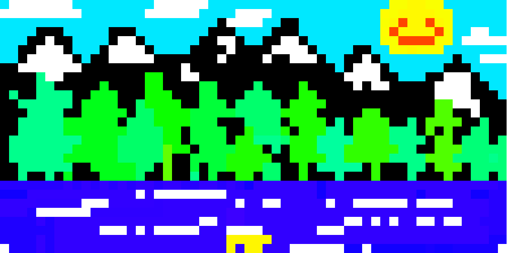

find me on the interwebs!

🌲 🌈 💻 ✨ 📚
Tools: JavaScript, p5.js, socket.io | Source Code: OpenProcessing
Multiplayer Pixel Art was my final project for CS44N: Great Ideas in Graphics. Our assignment was to use socket.io to create a massively multiplayer sketch of our choosing. That is, we needed to create a sketch that multiple people could interact with at the same time. As a long-time lover of pixel art, I decided to create a "multiplayer" sketch that people could use to make collaborative pixel art!
While implementing the basic pixel art functionality wasn't too difficult, the part I had the most fun with was adding in extra features like a color picker, different brush sizes, or even fun stamps! During my live demo in our final class session, one of my classmates created a beautiful mountain painting on my sketch. It seemed a shame to let it disappear, which inspired me to add save functionality.
You can interact with Multiplayer Pixel Art (built on OpenProcessing) below. Try opening this page on two separate windows: Whatever you draw on one window will show up on the other one as well!
find me on the interwebs!